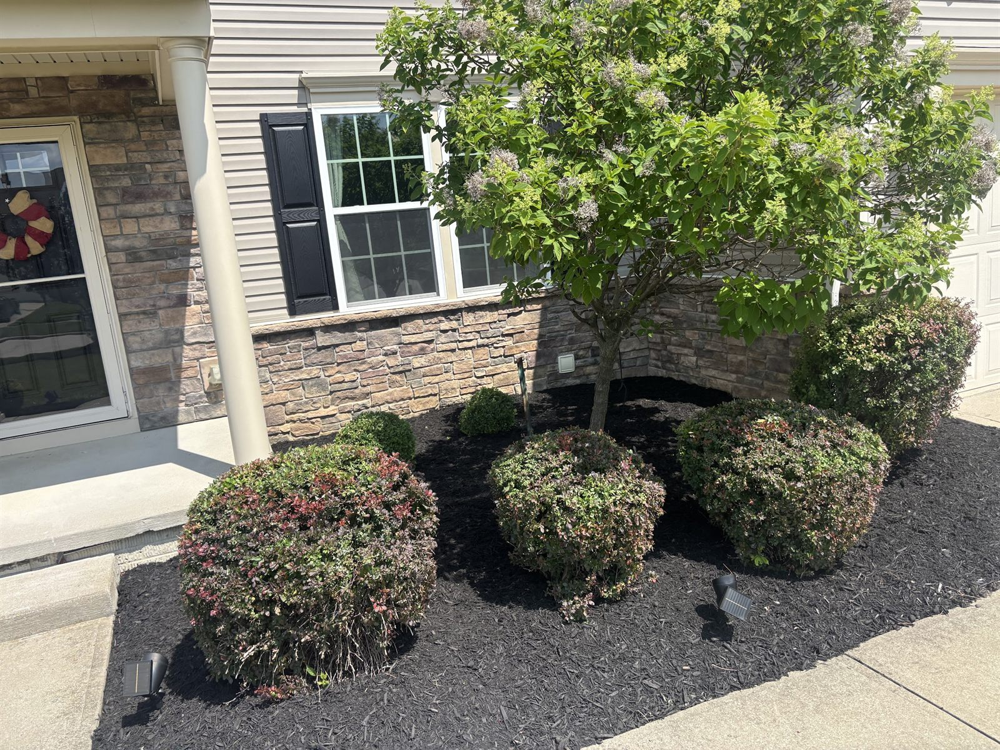

Questions
Got questions? Straight answers.
Don't see yours? Text Harrison. He texts back from his own phone.
Text HarrisonUpdated October 2026
Most askedHow much does lawn mowing cost in Richfield?
It depends on your yard: how big it is and how much we trim around. Send us your address and Harrison looks your yard up on the map and texts you a price today. You don't have to be home, and nobody has to come out first. Get my yard plan
Most askedWhat areas does Grass 'n' Gardens serve?
Grass 'n' Gardens is based in Richfield, Ohio. We serve Richfield and nearby towns, including Bath, Hinckley, Granger, Brecksville, Broadview Heights, North Royalton, Akron, and Medina. Not on the list? Call us. We might still come out.
Town pages: Richfield Brecksville Broadview Heights
Most askedIs Grass 'n' Gardens insured?
Yes. Grass 'n' Gardens is insured.
Most askedWhat landscaping services does Grass 'n' Gardens offer?
Weekly mowing, aeration, fertilizer, bush and hedge trimming, mulch and bed care, planting, spring and fall cleanups, leaf removal, small tree work and snow plowing, for homes, HOAs and businesses. Most customers put it all on one plan for the whole year.
More on each: Weekly mowing Fall cleanups Spring cleanups Mulch and beds Planting Aeration and fertilizer
When does Grass 'n' Gardens start mowing?
Our 2027 mowing season starts April 1. Pay for the whole season by March 31 and save 5%. See the Season Pass
Does Grass 'n' Gardens aerate, fertilize and plow snow?
Yes. We mow, trim bushes, lay mulch, aerate, fertilize, clean up leaves, cut small trees and plow snow. It all goes on one plan for the whole year.
How do I get a quote from Grass 'n' Gardens?
Call or text (440) 667-9642, email grassngardens4u@gmail.com, or fill out the yard plan form on our homepage. Estimates are free and we respond promptly.
What if it rains on my mowing day?
We come the next dry day. That's our guarantee: if we ever miss your mow, we're back the next day, free.
Do I have to be home?
No. We look your yard up on the map to price it. If we walk your yard, it takes about 20 minutes, and you don't have to be home for that either.
Am I locked in for the whole season?
No. You get 30 days from your first mow to be sure. Not happy? Cancel and get back what you didn't use.
When should I book a fall cleanup?
As soon as the leaves start coming down. Ohio State says leaves shouldn't sit on grass for more than two weeks, or the grass under them gets weak and yellow. Our Fall Pass is one price for the whole leaf season. We keep coming back till it's clear. See the Fall Pass
What is Five Before We Drive?
It's our promise. Before we pull out of your driveway, we check your yard 5 ways: edges crisp, everything blown clean, nothing left behind, gates latched, and no clumps. See the 5 checks
What are Grass 'n' Gardens' hours?
The crew starts at 6:30 AM, Monday through Saturday.
Does Grass 'n' Gardens work with commercial properties?
Yes. We maintain both residential and commercial properties across Summit and Medina counties, including regular mowing, bed care, and seasonal cleanups. See HOA and commercial
Does Grass 'n' Gardens do hardscaping?
No. We don't build retaining walls, patios or other hardscape. We stick to what we can do for your yard every year: mowing, beds, bushes, planting, leaves, aeration, small trees and plowing. See planting
Who owns Grass 'n' Gardens?
Grass 'n' Gardens was founded by Harrison Drvenkar, a Richfield, Ohio local, and holds a 5.0-star Google rating across 60 reviews. Meet Harrison
Want yourswritten out?
I'll walk your yard and write out your whole year. Takes 20 minutes and you don't have to be home.
(440) 667-9642